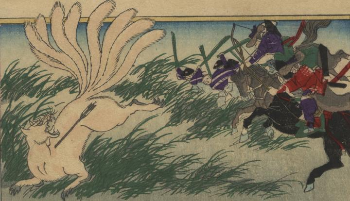

← 图鉴索引

草原で武者たちに矢を射られる九尾の狐。
著作者：楊洲周延／出典：親書誌：U426_nichibunken_0298：玉藻前；タマモノマエ／日付：2014／資源識別子：U426_nichibunken_0298_0001_0000
Copyright (c)2010- International Research Center for Japanese Studies, Kyoto, Japan. All rights reserved.